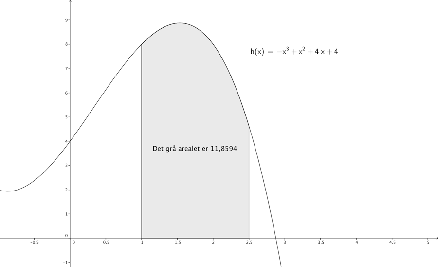

Kapitel 14 Integralregning
Integralregning kan bruges til at finde arealer under kurver. Når man integrerer er det den modsatte matematiske operation af differentiation, vi kalder den integrerede funktion for stamfunktionen og skriver \(F(x)\).
\[f\left( x \right) = 3x^{2}\]
\[F\left( x \right) = \frac{3}{3}x^{2 + 1} = x^{3} + k\]
Vi skriver et k for en konstant, man kunne også være lidt sløset med notationen og lege at k var 0. Når vi differentierer kommer vi tilbage til den oprindelige funktion :
\[F^{'}\left( x \right) = 3x^{2} = f(x)\]
Konstanten forsvandt igen da differentierede vi er altså tilbage ved den oprindelige funktion. Man kan angive at vi skal integrere vha. et integraltegn.
\[F\left( x \right) = \int\left( 3x^{2} \right)dx = x^{3}\]
Der er et en del regneregler for integration nogle er listet nedenfor, vi vil ikke komme ind på alle teknikker som partiel integration og integration ved hjælp af substitution i noterne her.
| \[f(x)\] | \[F(x)\] |
|---|---|
| \[x^{a}\] | \[\frac{1}{a + 1}x^{a + 1} + k\] |
| \[e^{x}\] | \[e^{x} + k\] |
| \[\frac{1}{x} = x^{- 1}\] | \[\ln\left( x \right) + k\] |
\[\int k \cdot f\left( x \right)dx = k \cdot \int f\left( x \right)\text{dx}\]
f.eks.
\[\int_{}^{}5 \cdot x^{2}dx = 5\int x^{2}dx = \ 5 \cdot \frac{1}{3}x^{3} + k\]
\[\int\left( f\left( x \right) \pm g\left( x \right) \right)dx = \int f\left( x \right)dx \pm \int g\left( x \right)\text{dx}\]
f.eks.
\[{\int\left( 3x^{2} + 2x - 3 \right)dx = \int 3x^{2}dx + \int 2xdx - \int 3dx = }{x^{3} + x^{2} - 3 + k}\]
14.1 Partiel integration
Hvis man ønsker at integrere produktet af 2 funktioner, er det muligt man kan finde en løsning vha. partiel integration.
\[\int f\left( x \right) \cdot g\left( x \right)dx = f\left( x \right) \cdot G\left( x \right) - \int f'\left( x \right) \cdot G\left( x \right)\text{dx}\]
Man vælger selv hvilken funktion der skal være \(f\left( x \right)\) og \(g\left( x \right)\), så man kan spare sig selv for bøvl, hvis man vælger klogt. Dvs. Hvis den ene funktion f.eks. bliver lettere at håndtere ved differentiation, er det en fordel at vælge denne som \(f\left( x \right)\).
Eksempel:
\[\int_{}^{}{\ln\left( x \right) \cdot x^{3}\text{dx}} = \ln\left( x \right) \cdot \frac{1}{4}x^{4} - \int_{}^{}{\frac{1}{x} \cdot}\frac{1}{4}x^{4}dx =\]
\[{\ln\left( x \right) \cdot \frac{1}{4}x^{4} - \frac{1}{4} \cdot \int x^{3}dx = \ln\left( x \right) \cdot \frac{1}{4}x^{4} - \left( \frac{1}{4} \right)^{2}x^{4} =}\]
\[{\frac{1}{4}x^{4}(\ln\left( x \right) - \frac{1}{4})}\]
Hvis man er ude for en rigtig ubehagelig funktion, kan man måske integrere denne ved flere partielle integrationer. Man vil ikke altid kunne finde en stamfunktion til en funktion, f.eks. har tæthedsfunktionen for normalfordelingen ikke en eksplicit stamfunktion.
14.2 Arealberegning
Hvis man skal beregne arealet nedenfor vha. integralregning, gør man dette vha. bestemte integraler, det betyder vi udregner arealet under kurven for \(x \in \rbrack\infty;2,5\rbrack\), 2,5 er den øvre grænse. Fra dette fratrækker vi arealet under kurven for \(x \in \rbrack\infty;1\rbrack\), hvor 1 er den nedre grænse.

Notationsmæssigt opskriver man nedre og øvre grænse nederst og øverst på sit integral og mellemregningsparentes.
\[{\int_{1}^{2,5}\left( - x^{3} + x^{2} + 4x + 4 \right)dx = \left\lbrack - \frac{1}{4}x^{4} + \frac{1}{3}x^{3} + 2x^{2} + 4x \right\rbrack_{1}^{2,5} = }{- \frac{1}{4}{2,5}^{4} + \frac{1}{3}{2,5}^{3} + 2{\cdot 2,5}^{2} + 4 \cdot 2,5 - \left( - \frac{1}{4}1^{4} + \frac{1}{3}1^{3} + 2{\cdot 1}^{2} + 4 \cdot 1 \right) =}\]
\[{17,9427 - 6,0833 = 11,8594}\]